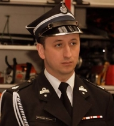
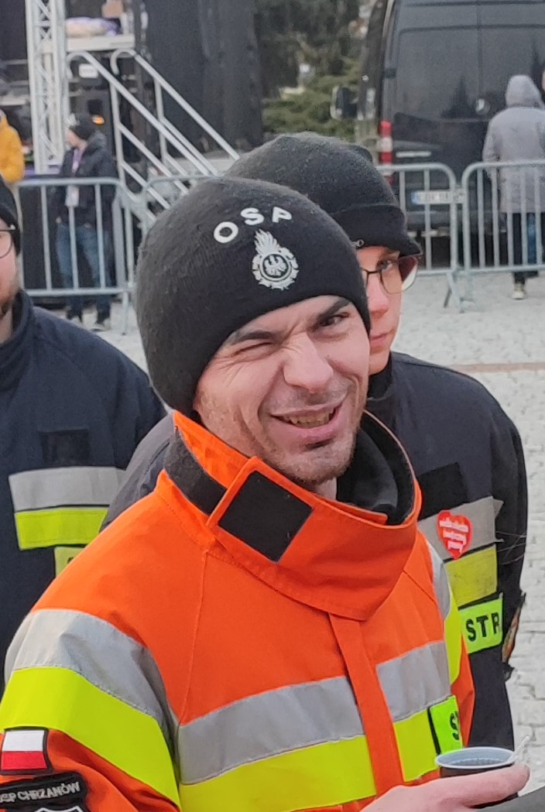

Zarząd OSP
Krzysztof Chomik
Prezes

Grzegorz Michalczyk
V-ce prezes

Kamil Kaleta
Naczelnik

Kamil Bohonos
Z-ca naczelnika

Powstała w 1872 roku.
W 1997 roku powołano grupę inicjatywną w celu reaktywacji stowarzyszenia OSP Chrzanów oraz dokonano rejestracji sądowej. Pierwszym po reaktywowaniu jednostki prezesem został dh Kazimierz Potocki,
a naczelnikiem Stefan Skrzydlewski.
Obecnie w mieście Chrzanowie obok JRG KP PSP funkcjonuje również i prężnie się rozwija sekcja ratownictwa medycznego utworzona przy OSP w Chrzanowie. Zastęp od roku 2002 posiada samochód ratownictwa medycznego - karetkę. Jednostka, poza typowymi zadaniami strażackimi, specjalizuje się głównie w doskonaleniu ratownictwa medycznego zarówno we własnym gronie jak również na terenie powiatu, poprzez prowadzenie szkoleń z pierwszej pomocy oraz organizację pokazów ratownictwa. Jest także nieocenionym wsparciem dla zawodowych strażaków.
Najlepszym dowodem na rosnącą siłę jednostki ochotników z Chrzanowa jest zajęcie czołowego miejsca w Mistrzostwach Polski w Ratownictwie Medycznym i Drogowym Krajowego Systemu Ratowniczo Gaśniczego (KSRG) w klasyfikacji ogólnej oraz I miejsca w klasyfikacji jednostek OSP. W 2012 roku jednostka wzbogaciła się o samochód specjalny lekki ratownictwa technicznego.
Prezes
V-ce prezes
Naczelnik
Z-ca naczelnika
Zabezpieczenia medyczne
Szkolenia z zakresu
pierwszej pomocy
Młodzierzowa
Drużyna Pożarnicza
Dziecięca
Drużyna Pożarnicza
ul. Śląska 20
32-500 Chrzanów
ospchrzanow@gmail.com
604 292 865